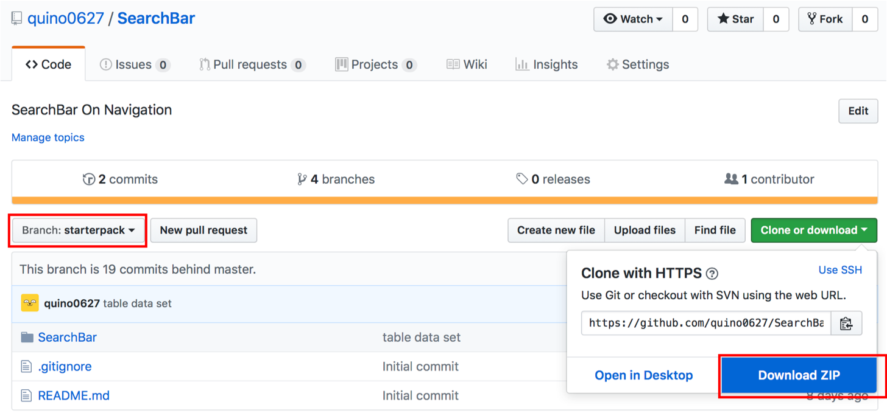

이번 기술 블로그에서는 UISearchController를 이용하여 Search Bar 를 구현하는 방법에대해서 알려드리고자 합니다.
Search Bar는 여러 데이터들의 모음(collection)에서 검색을 하기 위해 사용되는 인터페이스입니다. 테이블이 있는 대부분의 어플리케이션에는 검색 기능이 있는 것을 보실 수 있습니다.
Apple의 문서에 의하면 Search Bar를 사용할 때의 가이드라인을 제공하고 있습니다.
Search Bar는 값들의 모음에서 검색을 하기 위해 사용됩니다.
Search Bar는 단독, navigation bar 혹은 content view에 나타날 수 있습니다.
search 기능을 추가할 때 text field 대신에 search bar를 사용하여야 합니다.
Clear button을 사용 가능하게 해야 합니다.
Cancel button을 적절한 때에 사용 가능하게 해야 합니다.
필요하다면, 검색창에 힌트와 맥락을 제공해야 합니다.
검색 창 아래에 유용한 바로 가기와 같은 컨텐츠 제공을 고려해야 합니다.
Scope Bars - 이것을 이용하여 검색 결과를 개선하는 것이 좋습니다.
자세한 것은 Search
Bars - Human Interface
Guidelines에서
확인할 수 있습니다.
이번 포스트에서는 Search Bar을 적용하는 방법에 대해 다룰 것입니다. 어플리케이션은 Navigation
Bar에 Search Bar가 삽입되어 있는 형태로 만들어집니다.
검색 결과가 실시간으로 Update되며, Scope 설정을 할 수 있습니다.
Search Bar를 구현하는 방법은 두 가지가 있습니다.
1.직접적으로 UISearchBar를 이용하는 방법
UISearchBar를 직접 이용하는 방법으로 search bar를 구현할 수 있습니다. 이것은 텍스트 입력을 위한 텍스트 필드, 검색 버튼, 북마크 버튼, 취소 버튼을 제공합니다.
이 개체는 검색의 실질적인 역할을 수행하지 않기 때문에, 대리자를 이용하여 이를 구현해야 합니다. 텍스트가 입력되고 버튼이 클릭되는 이벤트를 다루어 검색을 구현하기 위해
UISearchBarDelegate 프로토콜을 채택하여 사용합니다.
이 방법은 검색 바를 커스터마이즈하여 사용하는 데 좋습니다. 하지만 여러 built in 기능을 제공하지 않습니다.
2.UISearchController를 이용하여 구현하는 방법
이 방법은 ios8 이상에서 지원하는 방법으로 , 새로운 컨트롤러인 UISearchController를 사용합니다. 이 방법은 검색 결과를 다른 어떤 뷰에든지 표시하여 검색 인터페이스를 표시할
수 있다는 특징이 있습니다.
이 애플리케이션에서 구현하고자 하는 검색창은 SearchController를 사용하는 방법입니다.
이 방법은 스토리보드에서 작업하는 방법을 제공하지 않기 때문에 코드를 작성함으로써 search bar를 구현할 것입니다. UISearchBar을 만들고 search controller의 속성들을
UISearchBar에 전달합니다. 그리고 이 search Bar를 view에 추가할 수 있습니다. 이 과정은 모두 programmatical 하게 진행됩니다.
우선 GitHub에서
스타터 프로젝트를 다운로드 받아 STEP1부터 작업을 진행할 수 있습니다.

Search Bar를 사용하기 위해서는 우선적으로 검색할 데이터 집합이 있어야 합니다. 이 어플리케이션은 추후 실제 데이터와 유사하게 만들기 위하여 NSObject 파일에 클래스를 생성하여 모델을 만들겠습니다. 일단 SearchBar 저장소 안에 새로운 저장소를 만들고, 그 안에 새로운 cocoa touch class파일을NSObject형식으로 생성합니다. 그 안에 다음과 같이 DeviceModel 클래스를 작성합니다. 작성한 클래스는 휴대폰의 기기명과 제조 회사를 추상화한 모델입니다. 우리는 휴대폰의 기기명을 검색하고, 제조 회사로 Scope를 구별할 것입니다.
작성한 클래스의 인스턴스들을 추후 테이블에 나타낼 수 있도록 deviceArray에 추가하여 줍니다. currentDeviceArray는 Search Bar를 이용하여 검색할 때 나타날 수 있도록 필터링 된 데이터를 저장하는 배열입니다.
UISearchController는 스토리보드에서 작업하는 라이브러리를 제공하지 않습니다. 우리는 programmatical하게 Search Bar를 만들 수 있습니다.
다음 과정은 Search Bar의 속성을 설정하고 navigationItem에 이를 추가하는 과정입니다. 여기서 주목할 수 있는 UISearchController의 특징은
결과를 표시하는 viewController를 설정할 수 있다는 것입니다. UISearchController(searchResultsController: resultsController) 에서 resultsController
가 결과를 표시할 viewController입니다. 나머지 코드는 주석으로 설명을 해 두었습니다.
이제 해야할 것은 검색 결과를 띄울 viewController를 세팅하는 것입니다. 테이블 뷰의 delegate를
self로 초기화하여 View Controller에서 테이블 대리자를 함께 다루도록 하겠습니다.
검색 delegate를 구현함에 있어서 실질적으로 검색 기능을 가능하게 하는 logic을 작성하는 과정입니다. textfield에 입력된 text와 선택되어있는 scope를 인자로 받는 함수를 작성합니다.
기본적으로 이 함수는 filer 메소드를 이용하여 deviceArray을 filtering하여 currentDeviceArray에 데이터를 저장하는 역할을 합니다.
우선 Scope를 확인하여 각각 데이터의 회사명이 현재 선택된 Scope와 일치하는지, 혹은 Scope가 'ALL'로 설정되어있는지 확인합니다. 그런 다음 검색 창의 텍스트를 확인하여 데이터를 적절하게 필터링합니다.
searchBar(_:selectedScope:) 함수는 사용자가 Scope를 수정하였을 때 실행되고, updateSearchResults(searchController:)는 사용자가 textfield에 글자를 입력할 때 마다 실행됩니다.
앞서 작성한 filterForText(_:scope:) 를 이용하여 Delegate를 구현할 수 있습니다.
테이블의 Delegate를 구현하여 검색 결과를 출력하는 것을 구현해야합니다. View Controller.tableView와 resultsController.tableView의 delegate를 모두 self로 초기화하였기 때문에
이 클래스 파일 안에서 두 테이블을 모두 제어할 수 있습니다. View Controller.tableView일 경우 DeviceArray로부터 데이터를 가져오고, resultsController.tableView의 경우 currentDeviceArray로부터 데이터를 가져오는 코드입니다. 검색 결과일 때의 tableView가 다른 viewController이라는 것을 확실히 하기 위해서 cell height을 다르게 두었습니다.
지금까지 Search Bar를 UISearchController을 이용하여 구현하는 방법에 대해서 살펴보았습니다. 위 방법을 이용하면 기본적인 검색 기능을 갖춘 어플리케이션을 개발할 수 있습니다.
프로젝트 전체 코드는 GitHub profile의 SearchBar Repository를 통해 확인하실 수
있습니다. 실행 동영상은 다음과 같습니다.